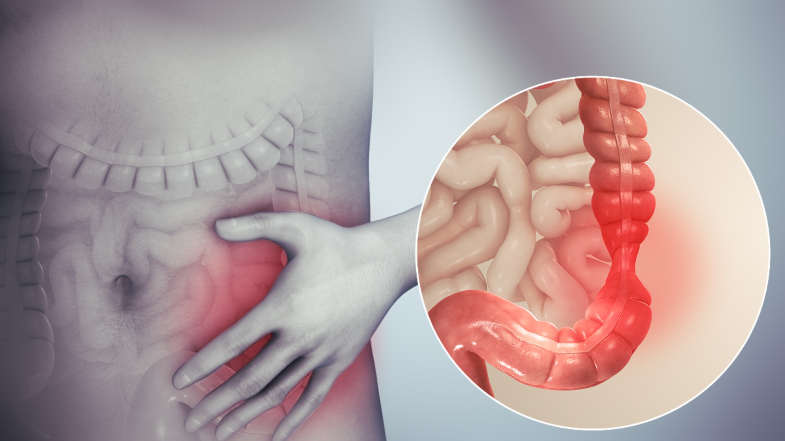

Irritable bowel syndrome

SYMPTOMS:
The signs and symptoms of IBS vary but are usually present for a long time. The most common include:
- Abdominal pain, cramping or bloating that is related to passing a bowel movement
-
Changes in appearance of bowel movement
-
Changes in how often you are having a bowel movement
-
Other symptoms that are often related include bloating, increased gas or mucus in the stool.
CAUSES
The precise cause of IBS isn't known. Factors that appear to play a role include:
- Muscle contractions in the intestine. The walls of the intestines are lined with layers of muscle that contract as they move food through your digestive tract. Contractions that are stronger and last longer than normal can cause gas, bloating and diarrhea. Weak intestinal contractions can slow food passage and lead to hard, dry stools.
-
Nervous system. Abnormalities in the nerves in your digestive system may cause you to experience greater than normal discomfort when your abdomen stretches from gas or stool. Poorly coordinated signals between the brain and the intestines can cause your body to overreact to changes that normally occur in the digestive process, resulting in pain, diarrhea or constipation.
-
Severe infection. IBS can develop after a severe bout of diarrhea (gastroenteritis) caused by bacteria or a virus. IBS might also be associated with a surplus of bacteria in the intestines (bacterial overgrowth).
Early life stress. People exposed to stressful events, especially in childhood, tend to have more symptoms of IBS.
-
Changes in gut microbes. Examples include changes in bacteria, fungi and viruses, which normally reside in the intestines and play a key role in health. Research indicates that the microbes in people with IBS might differ from those in healthy people.